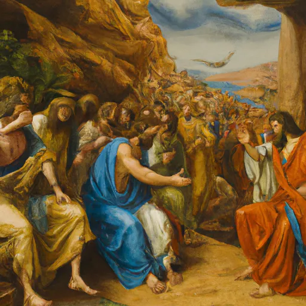

📜Hebreus,persas e fenícios
Tente ficar o máximo possível longe das distrações enquanto estuda, bons estudos, você consegue!
Hebreus, Persas e Fenícios foram três civilizações importantes do Oriente Médio na Antiguidade, cada uma com características marcantes que influenciaram profundamente a história mundial. Os hebreus destacaram-se por sua fé monoteísta, sendo os precursores das grandes religiões abraâmicas. Os persas construíram um vasto e poderoso império baseado na tolerância religiosa, organização administrativa e no zoroastrismo. Já os fenícios, habilidosos navegadores e comerciantes, ficaram conhecidos por fundar colônias no Mediterrâneo e por desenvolverem o alfabeto fonético, que serviu de base para os alfabetos modernos. Essas civilizações contribuíram de maneira decisiva para a cultura, a religião e a política do mundo antigo.
Vamos ver um pouco sobre cada um?
Hebreus
Os hebreus foram um povo semita da Antiguidade que se estabeleceu na região da Palestina, no chamado Crescente Fértil, entre o mar Mediterrâneo e o rio Jordão. Sua história está fortemente ligada à tradição religiosa e é registrada na Bíblia Hebraica, especialmente na Torá. Eles foram os primeiros a adotar o monoteísmo, acreditando em um único Deus, Yahweh, o que os diferenciava dos povos vizinhos, geralmente politeístas. Segundo a tradição, a origem dos hebreus remonta ao patriarca Abraão, que teria saído da cidade de Ur, na Mesopotâmia, seguindo um chamado divino. Seus descendentes enfrentaram diversos momentos marcantes, como a escravidão no Egito, o Êxodo liderado por Moisés, e a conquista da Terra Prometida (Canaã). Posteriormente, o povo hebreu organizou-se em reinos sob líderes como Saul, Davi e Salomão — sendo este último responsável pela construção do Templo de Jerusalém. Após a morte de Salomão, o reino dividiu-se em dois: o Reino de Israel (norte) e o Reino de Judá (sul). Ambos acabaram conquistados por impérios estrangeiros (assírios e babilônios), resultando no chamado cativeiro da Babilônia. Apesar das dificuldades, os hebreus mantiveram sua fé, tradições e identidade, influenciando fortemente as religiões judaica, cristã e islâmica. Sua herança cultural e religiosa é uma das mais duradouras da história da humanidade.
- Localização: Região da Palestina, entre o mar Mediterrâneo e o rio Jordão.
- Religião: Monoteísmo – crença em um único Deus (Yahweh).
- Livro sagrado: Torá, parte do Antigo Testamento da Bíblia.
- Patriarcas: Abraão, Isaac e Jacó são figuras centrais na origem do povo hebreu.
- Êxodo: Fuga do Egito liderada por Moisés, marco importante na identidade do povo hebreu.
- Reinos hebraicos: Saul, Davi e Salomão foram os reis mais importantes; Salomão construiu o Templo de Jerusalém.
- Divisão do reino: Após Salomão, o território foi dividido em Reino de Israel (norte) e Reino de Judá (sul).
- Cativeiro da Babilônia: Período de dominação e exílio dos hebreus, principalmente do Reino de Judá.
- Influência cultural: A fé e a tradição hebraica influenciaram profundamente o Judaísmo, Cristianismo e Islamismo. 